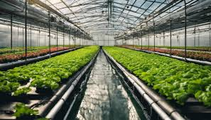
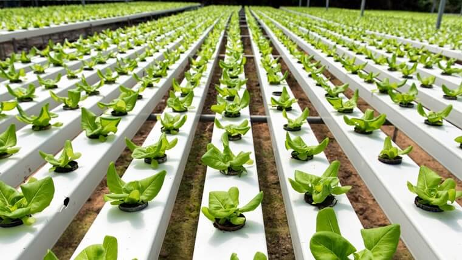

A palavra “Hidroponia” vem de “hydros”, que significa água, e “ponos”, que quer dizer trabalho ou esforço. E adivinha? Nesse jeito super moderno de cultivar plantas, a gente esquece completamente do solo! Isso mesmo, as plantinhas são criadas em uma solução nutritiva, com tudo que elas precisam, sem um grãozinho de terra.
Em vez de terra, usamos materiais bem legais e estéreis, como lã de rocha, vermiculita, areia, cascalho, bolinhas de argila e perlita, que ajudam a dar suporte às raízes. Nutrientes são passados de jeitos diferentes, dependendo do sistema de hidroponia que você usa. E não se esqueça do oxigênio! Ele é super importante, então estamos sempre injetando ar nas raízes. Também cuidamos para que o pH fique na medida certa e garantimos luz suficiente para as plantas fazerem a fotossíntese. Se o sol não dá o ar da graça, a gente usa luzes artificiais para dar aquele empurrãozinho.
Essa técnica inovadora de cultivo não é só futurística, mas também ajuda a entender os sintomas de falta de nutrientes nas plantas e quais são os essenciais para elas crescerem felizes e saudáveis.
E quais plantinhas podem se dar bem nesse ambiente? Muitas! Morangos, tomates e alface são alguns exemplos. E olha que curioso: os tomates cultivados em hidroponia dão flor duas semanas antes dos que estão no solo. Que vantagem, né?
A hidroponia tá bombando e é uma ótima maneira de produzir comida com muito mais eficiência e menos sujeira!
Para as plantinhas crescerem saudáveis, elas precisam de água, nutrientes minerais e oxigênio. Existem seis jeitos diferentes de fazer isso na hidroponia, cada um com seu estilo!
A técnica de cultivo hidropônico já vem de tempos antigos! As Jardins Suspensos da Babilônia são um exemplo bem famoso. E adivinha? Essa forma de cultivar plantas traz um montão de benefícios!
Mas nem tudo são flores! Aqui estão alguns desafios da hidroponia:
E aí, animado para entrar no mundo da hidroponia? Com tantas vantagens e um pouco de cuidado, você pode colher frutos incríveis!
Para mais informações, entre em contato conosco:
Email: contato@hidroponia.ifes.edu.com
Telefone: (27) 99274-6168
